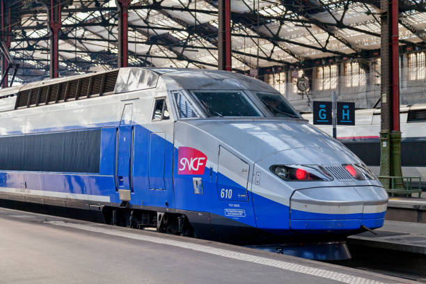

French Technological Innovations
France has long been at the forefront of technological advancement, consistently pioneering innovations that have shaped the global landscape. From early breakthroughs in digital communication to modern advances in transportation, aerospace, and energy, French technology reflects a blend of creativity, engineering excellence, and cultural influence.
Minitel: The Precursor to the Internet

Launched in the early 1980s, Minitel was a revolutionary online service that allowed users to access a variety of digital services—ranging from information directories to banking and ticket reservations—well before the advent of the World Wide Web. Its success positioned France as an early leader in digital communication and set the stage for future technological developments
TGV: Revolutionizing Rail Travel
The TGV (Train à Grande Vitesse) is one of the world’s fastest trains and a symbol of French engineering prowess. With its groundbreaking design and impressive speeds, the TGV has redefined rail travel, dramatically reducing journey times and connecting cities across France. This innovation not only transformed domestic transportation but also set new standards for high-speed rail systems worldwide
Government and Community Support for Innovation

Recognizing the cultural and economic impact of the gaming industry, the French government has implemented supportive policies such as tax incentives and grants. This support has nurtured a thriving ecosystem that benefits both established companies and innovative startups.
Future Trends and Emerging Innovations

As the gaming industry evolves, French developers are embracing trends like cloud gaming, augmented reality, and further AI integration. These emerging technologies promise to revolutionize interactive entertainment on a global scale.